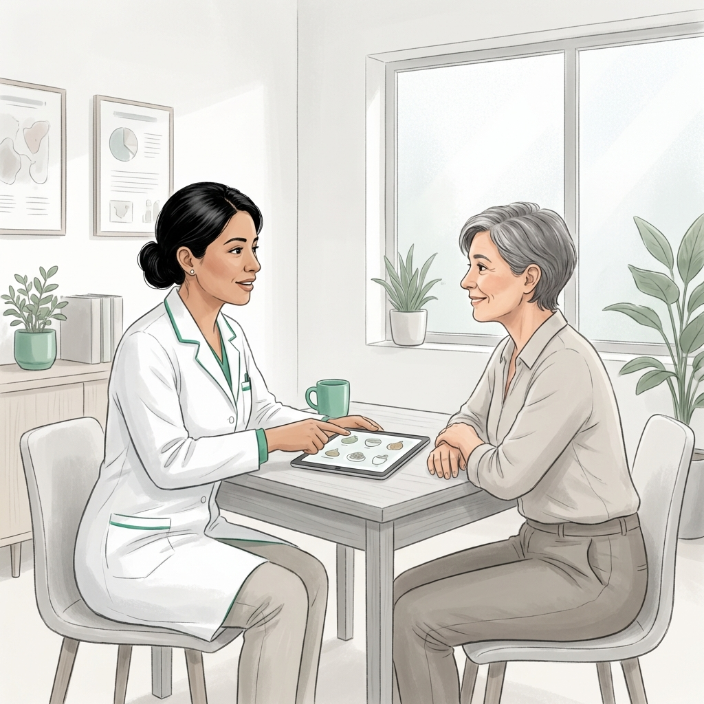
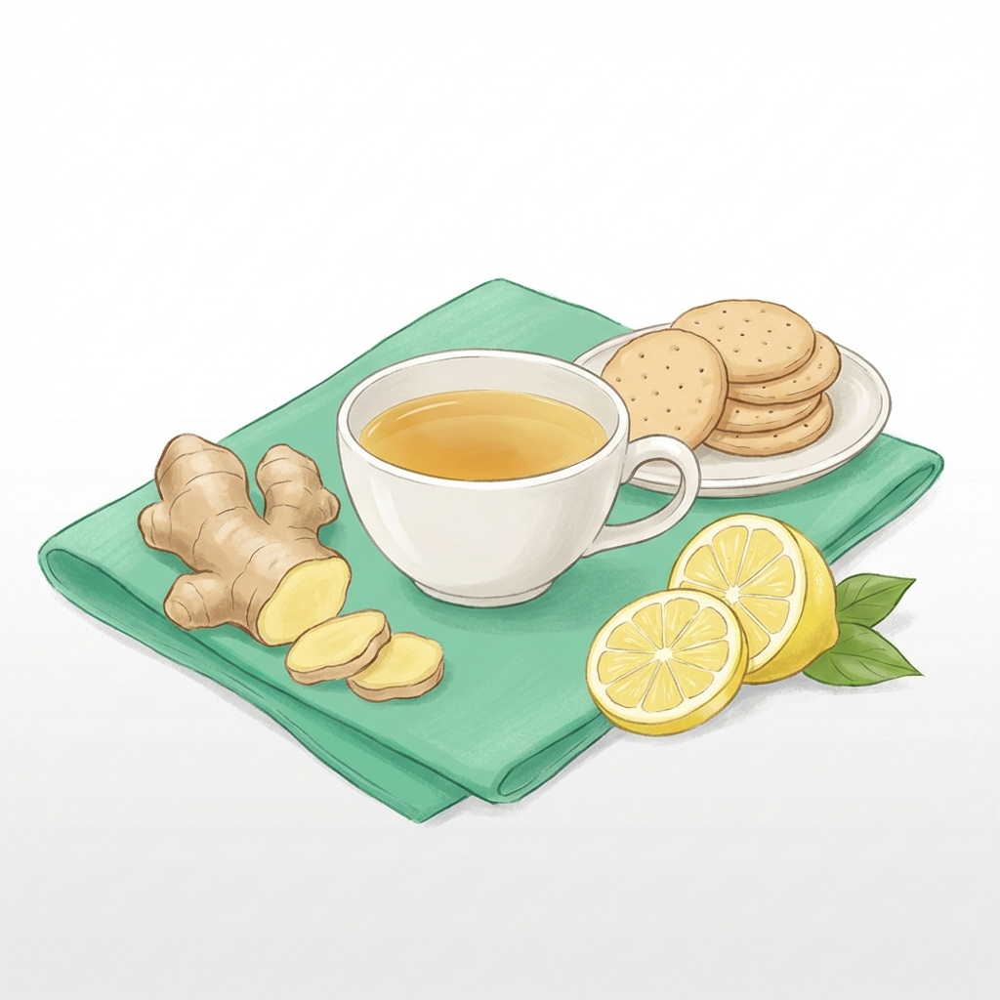
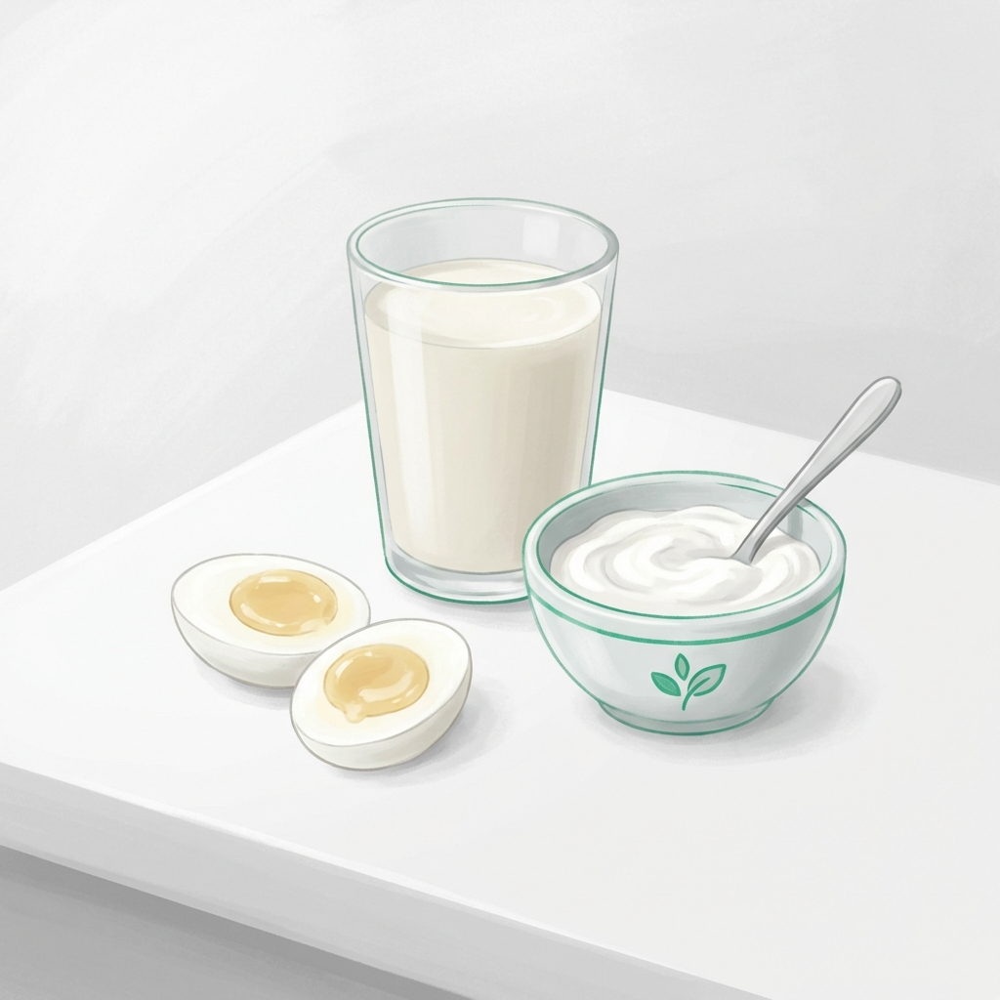
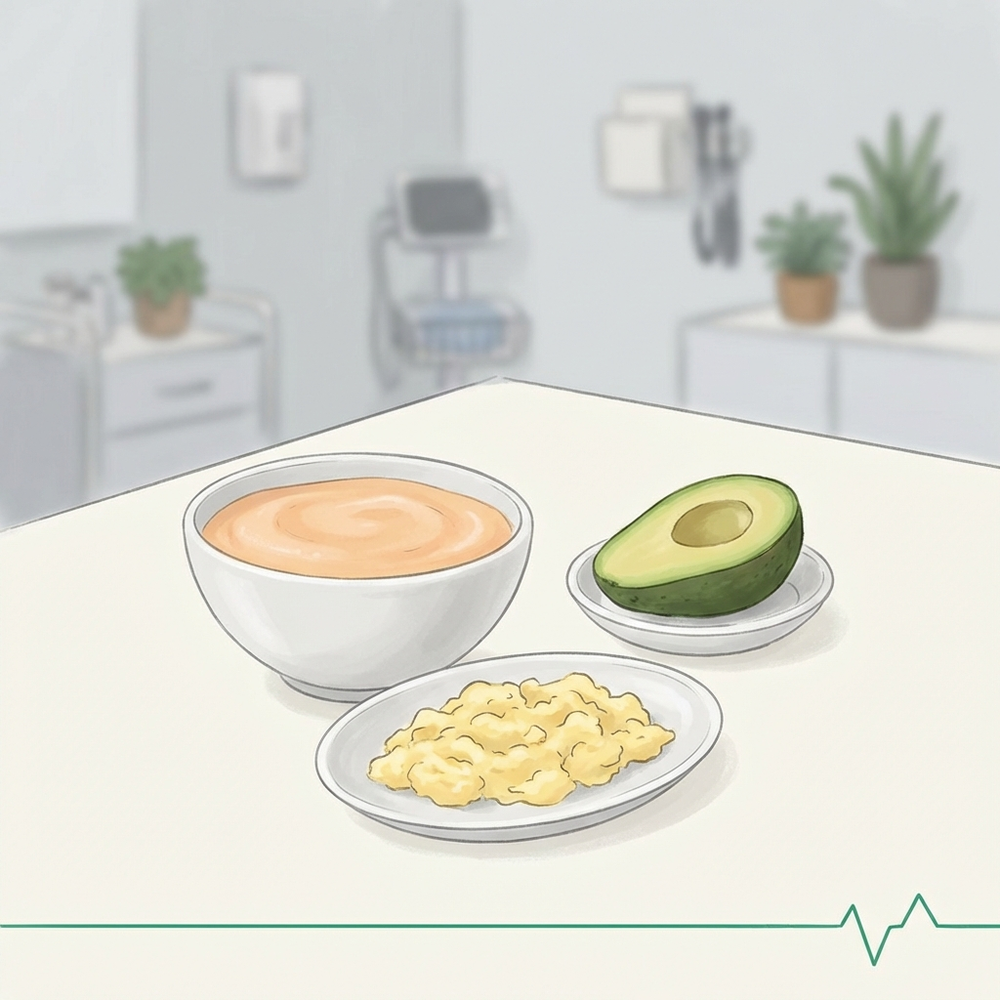

Nutrición Oncológica: Soporte Clínico durante el Cáncer
Acompañamiento profesional para manejar los efectos secundarios del tratamiento, prevenir la desnutrición y mejorar tu calidad de vida con rigor científico.

La nutrición oncológica trasciede el concepto habitual de "alimentación saludable". Se trata de una intervención clínica diseñada para enfrentar los obstáculos que los tratamientos (quimioterapia, radioterapia o cirugía) imponen a tu organismo.
En Clínica Denki, nuestro compromiso es ofrecerte herramientas reales para mantener tu fuerza y mejorar la tolerancia a tus medicamentos, sin falsas promesas, solo apoyo científico genuino.
Manejo Integral de Efectos Secundarios
La desnutrición afecta hasta al 80% de los pacientes; la intervención temprana es clave.

Protocolos de Síntomas
Estrategias dietéticas para mitigar náuseas, vómito y cambios en el gusto durante el tratamiento.
Protección de Mucosas
Adaptación de texturas y temperaturas para manejar la mucositis oral y evitar el dolor al tragar.
Nuestro Enfoque Nutricional
Cada paciente oncológico vive un proceso único. Por ello, nuestra intervención es estrictamente personalizada.

Soporte Proteico: Utilizamos fuentes de proteína de alta biodisponibilidad para evitar la pérdida de masa muscular durante el tratamiento oncológico.

Recursos y Guías
Información basada en evidencia para pacientes y familiares.
Preguntas Comunes
¿Debo evitar el azúcar por completo?
No hay evidencia de que el azúcar 'alimente' al cáncer de forma aislada, pero un exceso afecta tu salud metabólica. Nos enfocamos en el balance glicémico.
¿Los suplementos como Ensure son obligatorios?
Son herramientas útiles cuando la ingesta de sólidos es insuficiente. Evaluamos si en tu caso específico son necesarios o podemos cubrirlos con alimentos.
¿Qué pasa si nada me sabe a nada?
Es común (disgeusia). Usamos técnicas de marinado y ajuste de temperaturas para estimular otros receptores del gusto que aún estén activos.
Acompañamiento Oncológico basado en Evidencia
No atravieses este proceso sin soporte nutricional. Consulta cómo podemos ayudarte a mantener tu fuerza.
Consulta en Clínica, a Domicilio y Online